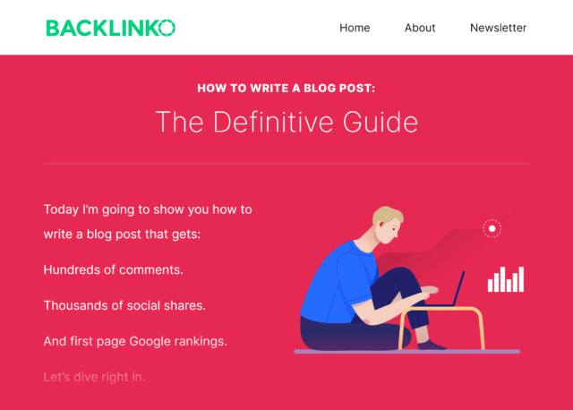

SEO KEYWORDS
What Are SEO Keywords?
SEO keywords (also known as “keywords” or “keyphrases”) are terms added to online content in order to improve search engine rankings for those terms. Most keywords are discovered during the keyword research process and are chosen based on a combination of search volume, competition and commercial intent.
Why Are SEO Keywords Important?
When you optimize your content around words and phrases that people search for, your website can rank higher for those terms.
Needless to say, ranking higher in the SERPs can drive more targeted traffic to your website. Which is why finding keywords people search for is step #1 of any SEO campaign.
In fact, SEO is pretty much impossible without keywords.
But when you have a list of the right keywords, you can start working on important SEO tasks like:
With that, here's how to find keywords for SEO.
Best Practices
Use Google Suggest
Many people struggle with SEO because they target keywords that are WAY too competitive.
In fact, I've had many clients tell me that they want to rank for super competitive search queries like “weight loss” and “insurance”.
Is it possible to rank for single-word SEO keywords like that? Sure.
But even if you do everything right, it can take years. Which is why I recommend focusing on long tail keywords.
Long tail keywords are long (usually 4+ word) terms that searchers use in Google and other search engines. And they tend to have a lower keyword difficulty compared to 1-3 word “head terms”.
So for people that are new to SEO, long tails are usually the best keywords to start with.
Fortunately, finding long tail terms is a breeze thanks to Google Suggest (also known as Google Autocomplete).
For example, let's say you wanted to create a page about “keto lunch”. Well, if your site is new, the keyword “keto lunch” is probably too competitive.
But when you type keto lunch into Google, you get a list of long tail keyword suggestions.
Pretty sweet.
Find Question-Based Keywords With These Two Free Keyword Tools
Are you looking for keywords for blog posts and articles?
If so, then you'll love these two free keyword tools. Both tools bubble up question keywords. Which are PERFECT keywords to create helpful SEO content around.
The first tool is called AnswerThePublic.com.
This tool scans the web for questions that your target audience asks about your topic online.
The second tool for finding question keywords is called “Question DB”.
It's actually super similar to AnswerThePublic.com. But it tends to bring up its own unique set of questions.
The great thing about these tools is that the question keywords you get are long tail keywords. This means they usually don't have a ton of competition on Google's first page.
Find Outside The Box Keywords
The #1 issue with any keyword research tool is that they usually spit out words and phrases that are super related to the seed keyword you typed into it.
For example, look at the keyword suggestions that I get from Semrush when I type in “SEO tips”.
These are decent keywords. But they're not super creative.
If you want to find creative keywords, I recommend checking out a nifty free SEO tool called SeedKeywords.com.
This tool lets you ask customers, colleagues or clients how THEY would search for something in Google.
And, if you're like me, you'll probably find a handful of terms that you wouldn't have been able to think of on your own (or get from any tool).
Use Amazon to Find Ecommerce Keywords
Keyword research for eCommerce is similar to keyword research for a blog.
The one big difference is that, with ecommerce SEO, you need to find keywords for product and category pages… and lots of them.
Fortunately, you can find lots of excellent product keywords using Amazon Suggest. This works the exact same way as Google Suggest.
You just type in a product or product category into Amazon…
…and jot down any terms that come up.
Find Terms That Competitors Already Rank For
Typing a bunch of random keywords into a tool can only get you so far.
In fact, I find myself using traditional keyword tools less and less. Instead, I just look at the keywords that my competitors already rank for.
Not only does this generate a laundry list of keywords, but it's SUPER fast. I just pop in a competing domain… and I get a list of thousands of keywords within seconds.
There are a number of SEO tools that reverse engineer your competitor's best SEO keywords. Most, if not all of them, are paid.
But if you already use Semrush, you already have this feature at your disposal.
Pro Tip: Reverse engineer websites in your league. For example, if your site doesn't have a ton of Domain Authority, don't reverse engineer the #1 site in your space. Instead, use a website that's similar to yours. That way, you'll find keywords that you have a decent chance of ranking for.
Find Search Volume and CPC Data With Google's Keyword Tool
The Google Keyword Planner is super helpful because the data comes from the most reliable source of keyword data: Google itself.
However, the Keyword Planner has two major issues.
- You need to set up a Google Ads account to use it
- Unless you're running a campaign, you get monthly search volume ranges
Fortunately, you can get around both of these issues pretty easily.
First, even though you need a Google Ads account to use the Keyword Planner, that doesn't mean that you need to run any ads. As long as your account is fully set up, you're good to go.
For example, we're not currently running any ads and still have full access to the tool.
And if the tool is giving you a search volume range, like this…
you can add a keyword that you're interested into a plan.
And the Plan Overview will show you the exact impressions you'll get (which is basically monthly search volume).
Discover Popular Keywords With Google Trends
Yes, monthly search volume is important.
After all, there's no point in ranking for a keyword that no one searches for.
The thing is, search volume doesn't tell you how that keyword is trending. And over the long-term, a keyword's trend is more important than its raw search volume.
Fortunately, you can easily see a keyword's trend using Google Trends.
For example, some time ago I published a guide to the Google Search Console.
Why did I choose this topic and keyword?
Not because lots of people were searching for it. In fact, most people were still calling it by its old name: Google Webmaster Tools.
But when I looked at Google Trends, I saw that one keyword was blowing up… and the other was slowly dying out.
This is an extreme example. But it does show you that the monthly search volume that a tool shows you is a snapshot of that keyword's popularity. It doesn't tell you if that keyword is blowing up… or fading away.
Personally, I put A LOT of effort into every piece of content that I publish. And for that effort to pay off, my content needs to bring in targeted traffic for years. And to do that, I focus on terms that are growing in popularity.
Use BuzzSumo To Find Topics and Keywords
BuzzSumo isn't technically a keyword research tool. But if you know how to use it BuzzSumo is actually a great tool for finding keywords.
Specifically, you want to put a competing site's homepage into their “Web” feature.
And you get a list of content that's performed best for that particular site.
Obviously, this list is designed for coming up with content topics. But it's great for digging up SEO keywords too.
Double Down on SEO Keywords That You Already Rank For
When it comes to keyword research for SEO, most people focus 100% on finding new keywords.
And hey, there's nothing wrong with that.
But to get a FULL list of keywords that you can optimize around, you also want to look at the keywords that you currently rank for.
And the best way to do that?
The Google Search Console.
To execute this strategy, head over to the Performance section.
Then, look at specific keywords that you rank for in the organic search results. You'll probably already recognize 90% of these keywords.
But if you dig deep, you might also come across a handful of keywords that surprise you.
For example, according to the Search Console, I rank for “youtube description example”.
The page that ranks for this term includes an example.
But it's really not optimized around that term.
Well, now that I know that Google likes my site as a result for that keyword I can create a new web page that's 100% optimized around “YouTube description example”.
And that page has a great chance of ranking high on the first page for that term.
How to Use SEO Keywords In Your Content
Now that you've found a bunch of SEO keywords, the next step is to use those keywords in your content.
Here's exactly how to set that up:
First, decide on one main keyword.
In other words: don't optimize your content around several different terms. It very rarely works.
For example, my guide to writing a blog post is optimized around “how to write a blog post”.
Even though I do use variations of that keyword (like “writing a blog post”) in my content, my on-page SEO is pretty much 100% focused on my main keyword.
Next, use your main keyword a handful of times in your content. There's no need to go overboard and repeat your keyword 100 times. Just mention your keyword a few times. That way, Google knows that your page is about that keyword.
For example, this page uses my target keyword a handful of times on the page.
Next, make sure your keyword shows up in your title tag and URL.
For example, my main keyword for this post is “SEO techniques”.
And I made sure to use that keyword (once) in my title tag and in my URL.
Then, add your keyword to your meta description.
Does Google care about the terms that show up in your meta description for SEO? Nope!
You want to add your keyword to your description because it helps your snippet stand out in the organic search results.
For example, check out my meta description for this page from my blog.
See how Google bolds the keyword?
That really helps my result stand out and improves my organic click-through-rate.
Next, sprinkle in a few variations of your main keyword.
For example, for my page optimized for “SEO techniques”, I added variations of that term like “SEO tips” and “search engine optimization” on the page.
You can easily find relevant keyword variations in the “Searches Related to” section at the bottom of the search results.
Finally, use internal links to send authority to your new page.
The fact is: new pages don't have any backlinks or authority. But when you internally link to that new page, it gets INSTANT link authority.
One more thing to keep in mind with internal links: make sure to use anchor text that includes your target keyword. That helps Google understand that your page is about that specific topic.
Learn More
The 8-Step Content Strategy [Template Included]: A guide to planning and executing an SEO-focused content strategy in 2021.
On-Page SEO - 9 Actionable Techniques That Work: A video that dives deep into the on-page SEO process, including lots of examples and case studies.
Copywriting - The Definitive Guide: Tips and strategies for using keywords in your content without keyword stuffing.
How to Use Google Keyword Planner: In-depth tutorial for getting the most out of the Keyword Planner.